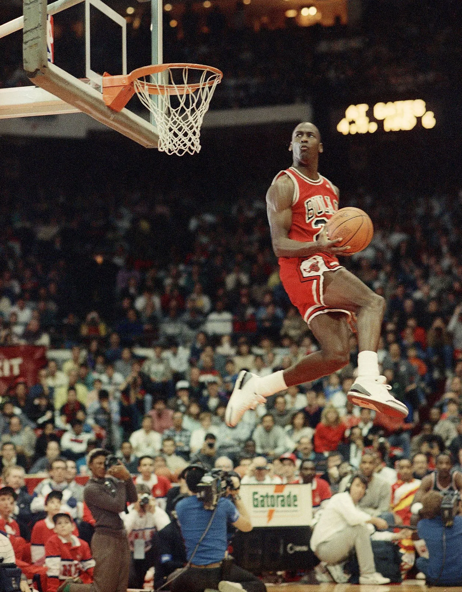
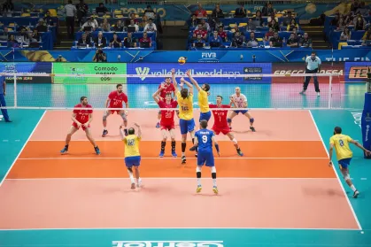
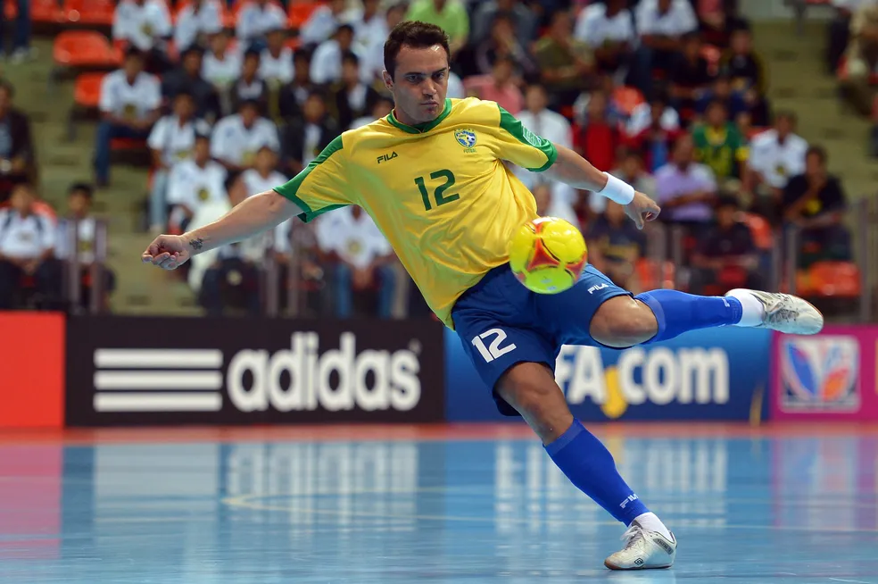

Esportes
Esportes para Todos os Gostos
Os esportes são uma parte essencial da cultura humana, oferecendo uma ampla variedade de atividades para pessoas de todas as idades e interesses. Desde esportes tradicionais como futebol, basquete e tênis, até esportes mais recentes como skate, escalada e esportes eletrônicos, há algo para todos. A diversidade de esportes disponíveis permite que as pessoas encontrem uma atividade que se encaixe em seus gostos e habilidades, promovendo um estilo de vida active e saudável.

Futebol
O futebol é o esporte mais popular do mundo, com bilhões de fãs em todos os continentes. Ele é jogado por equipes de 11 jogadores em um campo retangular, onde o objetivo é marcar gols chutando a bola para dentro do gol adversário. O futebol é conhecido por sua emoção, habilidade e paixão, e é praticado tanto em nível profissional quanto amador em todo o mundo.
 Clique aqui para saber mais sobre o que é futebol?!
Clique aqui para saber mais sobre o que é futebol?!
Melhores jogadores da minha época:
- Lionel Messi
- Cristiano Ronaldo
- Neymar Jr.
Basquete
O basquete é um esporte dinâmico e emocionante, jogado por equipes de cinco jogadores em uma quadra retangular. O objetivo do basquete é marcar pontos lançando a bola através de um aro elevado. O basquete é conhecido por sua velocidade, habilidade e estratégia, e é popular em muitos países, especialmente nos Estados Unidos, onde a NBA é a principal liga profissional de basquete do mundo.

Clique aqui para saber mais sobre Michael Jordan, o melhor jogador de basquete de todos os tempos?!
Vôlei
O vôlei é um esporte que combina técnica, estratégia e trabalho em equipe. É jogado por equipes de seis jogadores em uma quadra dividida por uma rede, onde o objetivo é fazer pontos ao tocar a bola e fazê-la passar pela rede para o lado adversário. O vôlei é popular em muitos países e tem uma comunidade global de praticantes e torcedores.

Clique aqui para saber mais sobre o que é vôlei?!
Tênis
O tênis é um esporte que exige precisão, estratégia e habilidade. É jogado entre dois jogadores (simples) ou entre duas duplas (dupla) em uma quadra dividida por uma rede. O objetivo é fazer pontos ao acertar a bola na quadra adversária de forma que o oponente não consiga devolvê-la. O tênis é popular em muitos países e tem torneios importantes ao longo do ano, como o Grande Slam.
 Clique aqui para saber mais sobre Quem é Djokovic?!
Clique aqui para saber mais sobre Quem é Djokovic?!
Futsal
O futsal é um esporte que combina velocidade, habilidade e estratégia. É jogado em uma quadra menor que o futebol, com cinco jogadores por equipe. O objetivo é marcar gols chutando a bola para dentro do gol adversário. O futsal é popular em muitos países e tem uma comunidade global de praticantes e torcedores.


Clique aqui para saber mais sobre o que é futsal?!
Clique aqui para saber mais sobre as competições esportivas mais importantes do mundo?!